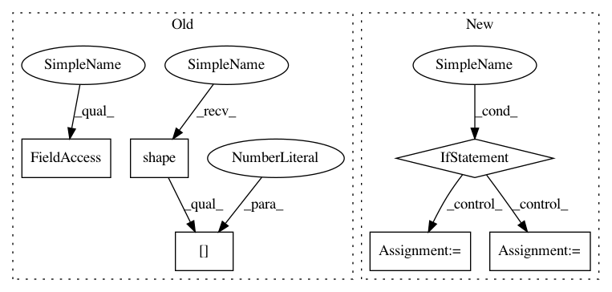

bb099e4c5b48329b842dbf9884f086f7b514bc0a,gpflow/models/model.py,GPModel,predict_f_samples,#GPModel#Any#Any#Any#Any#,112
Before Change
mu, var = self.predict_f(Xnew, full_cov=full_cov) // [N, P], [P, N, N]
num_latent_gps = var.shape[0]
num_elems = tf.shape(var)[1]
var_jitter = ops.add_to_diagonal(var, default_jitter())
L = tf.linalg.cholesky(var_jitter) // [P, N, N]
V = tf.random.normal([num_latent_gps, num_elems, num_samples], dtype=mu.dtype) // [P, N, S]
LV = L @ V // [P, N, S]
mu_t = tf.linalg.adjoint(mu) // [P, N]
return tf.transpose(mu_t[..., np.newaxis] + LV) // [S, N, P]
After Change
Currently, the method does not support `full_output_cov=True` and `full_cov=True`.
if full_cov and full_output_cov:
raise NotImplementedError(
"The combination of both `full_cov` and `full_output_cov` is not supported."
)
// check below for shape info
mean, cov = self.predict_f(Xnew, full_cov=full_cov, full_output_cov=full_output_cov)
if full_cov:
// mean: [..., N, P]
// cov: [..., P, N, N]
mean_for_sample = tf.linalg.adjoint(mean) // [..., P, N]
samples = sample_mvn(
mean_for_sample, cov, "full", num_samples=num_samples
) // [..., (S), P, N]
samples = tf.linalg.adjoint(samples) // [..., (S), N, P]
else:
// mean: [..., N, P]
// cov: [..., N, P] or [..., N, P, P]
cov_structure = "full" if full_output_cov else "diag"
samples = sample_mvn(
mean, cov, cov_structure, num_samples=num_samples
) // [..., (S), N, P]
return samples // [..., (S), N, P]
def predict_y(
In pattern: SUPERPATTERN
Frequency: 3
Non-data size: 6
Instances
Project Name: GPflow/GPflow
Commit Name: bb099e4c5b48329b842dbf9884f086f7b514bc0a
Time: 2020-03-16
Author: dutordoirv@gmail.com
File Name: gpflow/models/model.py
Class Name: GPModel
Method Name: predict_f_samples
Project Name: NifTK/NiftyNet
Commit Name: 9d9b14ab3f677e906a6829d3389c55857373ea8c
Time: 2018-08-08
Author: wenqi.li@ucl.ac.uk
File Name: niftynet/layer/loss_segmentation.py
Class Name: LossFunction
Method Name: layer_op
Project Name: NifTK/NiftyNet
Commit Name: 9d9b14ab3f677e906a6829d3389c55857373ea8c
Time: 2018-08-08
Author: wenqi.li@ucl.ac.uk
File Name: niftynet/layer/loss_regression.py
Class Name: LossFunction
Method Name: layer_op
Project Name: GPflow/GPflow
Commit Name: bb099e4c5b48329b842dbf9884f086f7b514bc0a
Time: 2020-03-16
Author: dutordoirv@gmail.com
File Name: gpflow/models/model.py
Class Name: GPModel
Method Name: predict_f_samples